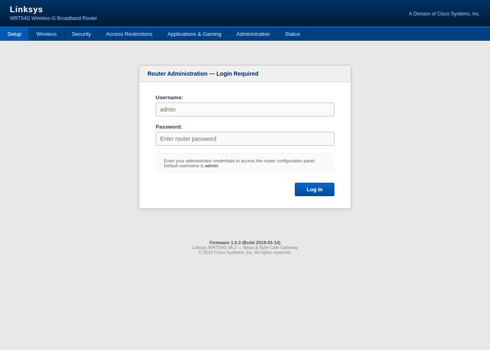
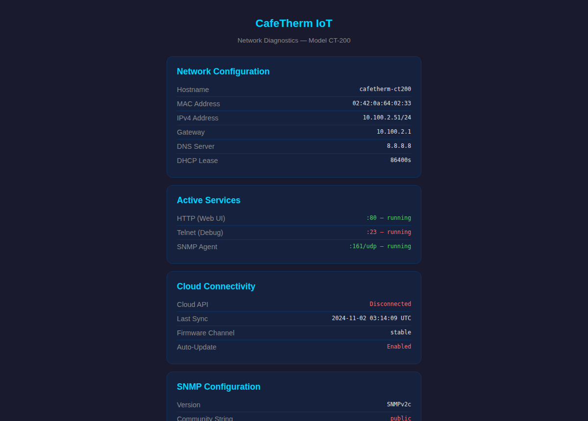
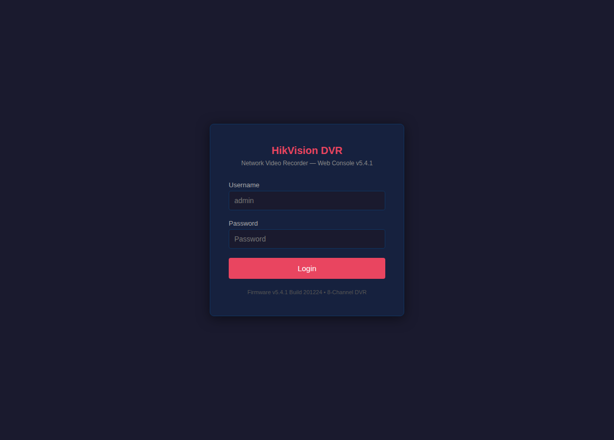

Exercise 2B: The Forgotten Protocol
Engagement Status
| Phase | Status |
|---|---|
| Network Discovery | Complete |
| Port Scanning | Complete |
| Service Enumeration | In Progress |
| Exploitation | Pending |
What you know so far: The Bean & Byte Cafe network has 9 devices. You have mapped every host, identified open ports, and fingerprinted the services running on each. You found cleartext WiFi passwords in sticky notes, default credentials on IoT devices, and open file shares. But so far, you have only scratched the surface of what these services expose.
Flag progress: The flag has three parts. Each is hidden in a different protocol response:
| Part | Source | Protocol |
|---|---|---|
| 1 | Gateway SNMP sysDescr | SNMP |
| 2 | Barista workstation schedule file | SMB |
| 3 | Thermostat WiFi config | Telnet |
Flag format: OCR{________}
Background: The Protocols Nobody Checks
Web interfaces get all the attention. When someone audits a network, they open a browser, poke at login pages, and call it a day. But most networked devices speak protocols that never render in a browser. These are the protocols that administrators configure once and forget, that ship with default settings, and that expose data no one intended to share.
The four overlooked protocols in scope for the exercise:
SNMP (Simple Network Management Protocol) runs on port 161/UDP. It was designed to let administrators monitor and manage network devices remotely. SNMP uses "community strings" as passwords. The default read-only string is public, and the default read-write string is private. Many devices ship with these defaults and never change them. An attacker who can read SNMP data can pull device configurations, interface statistics, connected client lists, and system descriptions. An attacker with the write community string can change device configurations remotely.
SMB (Server Message Block) runs on port 445/TCP. It is the Windows file-sharing protocol, but Samba brings it to Linux as well. When a share allows guest access, anyone on the network can browse and download files without credentials. Employee schedules, internal documents, and configuration files are commonly found on poorly secured SMB shares.
Telnet runs on port 23/TCP. It is an unencrypted remote shell protocol that IoT devices and embedded systems still use for management. Traffic is sent in cleartext, including credentials. Many IoT devices ship with default credentials like root/root that are never changed.
PJL (Printer Job Language) runs on port 9100/TCP, also called JetDirect or RAW printing. Network printers accept PJL commands over this port for configuration and status queries. But PJL can also query print job history, list filesystem contents, and download cached files. Printers store recently printed documents, and PJL provides a mechanism to retrieve them.
Your Objectives
- Walk the SNMP tree on the gateway to discover WiFi SSIDs, connected devices, and the write community string
- Access the barista workstation SMB share and examine the employee schedule
- Log into the smart thermostat via telnet and extract WiFi configuration
- Query the network printer via PJL for job history and cached documents
- Probe the security camera DVR RTSP and telnet banners for system details
- Assemble the three flag tokens
Walkthrough
Step 1: Launch the Exercise
Navigate to the platform, find "The Forgotten Protocol" under Coffee Shop exercises, and launch it. Note the IP addresses assigned to each device.
Step 2: SNMP Enumeration on the Gateway
The gateway runs SNMP on port 161 with the default read community string.
Open it in a browser
The gateway also serves a web admin on HTTP port 80. Open http://<gateway_ip>/ in a browser to reach the Linksys WRT54G login below. The point of the exercise is that SNMP hands you the same device data with no login at all: where the web console makes you authenticate, snmpwalk reads the SSID, client list, and community strings straight off port 161.

Read the SNMP system description
Start by reading the system description OID with the default public community string.
The response contains the sysDescr OID and the first flag token (prefixed with OCR-SN:).
Walk the full SNMP tree
Walk the entire SNMP tree to see what else the device exposes.
The command walks every OID the device exposes. The output is extensive. Look for the extend entries, which appear under the NET-SNMP-EXTEND-MIB tree. These contain:
- WiFi SSIDs and passwords: the staff network uses WPA2 with a passphrase
- Connected device list: confirms all 8 client devices on the network with their IP offsets
- SNMP configuration: reveals both the read and write community strings
Confirm write community access
The write community string private is a critical finding. An attacker with that string could modify the router's SNMP-accessible configuration. Verify write access by querying with the private string.
A successful data response confirms the private community string has read-write access. Look for a value prefixed with OCR-SN: in the sysDescr response: the token is the part after the prefix. That's your first flag token.
Step 3: SMB File Share on the Barista Workstation
The barista workstation runs Samba on port 445.
List the workstation shares
List the available shares on the barista workstation over a null session.
You should see a share called schedules.
Connect to the schedules share
Open an interactive smbclient session against the share.
A smb: \> prompt confirms you are connected to the share.
List and download the schedule
From inside the smbclient session, list the files and pull the schedule down.
The get command copies the file to your Kali working directory before you exit.
Retrieve the schedule in one command
As an alternative to the interactive session, stream the file straight to standard output.
Read the file carefully. The schedule itself contains employee names and shifts, but the sticky notes section at the bottom contains sensitive information: WiFi passwords, POS admin credentials, alarm codes, register PINs, and a flag token.
Read the sticky notes carefully: one of the entries contains a value prefixed with OCR-SN:. The token is the part after the prefix. That's your second flag token.
Step 4: Telnet into the Smart Thermostat
The thermostat runs a telnet service on port 23 with default credentials.
Open it in a browser
The thermostat exposes a web dashboard on HTTP port 80. Open http://<thermostat_ip>/diagnostics/ in a browser to reach the Network Diagnostics page below. The page is a gift for an attacker: it lists every live service (HTTP, telnet on port 23, SNMP on UDP 161) and prints the SNMP community string in plain text. Reading it tells you exactly which forgotten protocols to enumerate before you ever open a terminal.

Connect to the thermostat telnet service
Open a raw TCP connection to the telnet port with netcat.
When prompted, log in with root / root. You will get a BusyBox-style shell. Type help to see available commands.
Read the WiFi configuration
From the BusyBox shell on the thermostat, print the WiFi configuration file.
The output shows the thermostat's WiFi configuration, including the staff network SSID and WPA2 passphrase. The configuration file also contains the third flag token. Look for a value prefixed with OCR-SN: in the output: the token is the part after the prefix. That's your third flag token.
Step 5: PJL Printer Interrogation
The network printer accepts PJL commands on port 9100.
Query the printer identity
Send a PJL identity query over a raw TCP socket to fingerprint the printer.
The response returns the printer make and model.
Query the print job history
Ask the printer for its recent job log.
The job log reveals three recent print jobs, including a W-2 tax form. The exposure matters because printers cache recently printed documents, and PJL provides commands to access that cache.
Query the printer filesystem
Probe the printer's on-board filesystem for stored files.
The response reveals a /pjl/W2_cache/ directory containing W2_Maria_Garcia.txt.
List the cache directory
List the contents of the discovered cache directory.
The listing confirms the cached W-2 file is present.
Retrieve the cached W-2
Upload the cached document back over the PJL socket.
The printer returns a full W-2 tax document containing the employee's name, partial SSN, home address, wages, and employer information.
A network printer sitting in the corner of a coffee shop cached a tax document containing an employee's Social Security number, home address, and income. Anyone on the network can retrieve it by sending four bytes of PJL commands over a raw TCP socket. No authentication. No logging. No alerts.
Printers are among the most overlooked attack surfaces in any network. They receive sensitive documents, cache them internally, and expose management protocols with no authentication by default. In a real engagement, printer data retention is almost always a reportable finding.
Step 6: DVR Banner Grabbing
The security camera DVR exposes RTSP on port 554 and telnet on port 23.
Open it in a browser
The DVR also serves a HikVision web console on HTTP port 80. Open http://<dvr_ip>/ in a browser to reach the login below. The console names the model and firmware once you log in, but the RTSP and telnet banners below leak the same DS-7208HGHI-F1 model and firmware version to anyone on the network with no credentials at all.

Grab the RTSP banner
Send an empty payload to the RTSP port and read whatever banner the service returns.
The banner identifies the DVR model and firmware.
Grab the telnet banner
Repeat the banner grab against the telnet port.
The banners reveal the DVR model (HikVision DS-7208HGHI-F1), firmware version, and channel configuration. The DVR does not contain a flag token, but the information is valuable for identifying known vulnerabilities in the specific firmware version.
Step 7: Assemble the Flag
Combine the three tokens in order:
Submit the assembled flag on the platform.
Record Your Findings
SNMP sysDescr output:
SNMP extended OIDs discovered:
OID Data Exposed wifi_ssids connected_devices snmp_config SMB schedule sticky notes:
Thermostat WiFi config:
Printer W-2 data:
How to submit: enter the flag on the exercise page exactly as you recovered it, keeping the
OCR{...}wrapper.Flag: _________
Analysis Questions
1. Why is the SNMP write community string a more serious finding than the read community string?
Reveal Answer
The read community string (public) allows an attacker to view device information: system descriptions, interface statistics, connected clients. Read access on its own is an information disclosure issue. The write community string (private) allows an attacker to modify the device configuration remotely. On a router, this could mean changing DNS servers to redirect traffic, modifying firewall rules, or altering routing tables. Write access turns a reconnaissance finding into a full device compromise.
2. The printer cached a W-2 form that was printed weeks ago. What makes printer data retention a systemic risk rather than a one-time issue?
Reveal Answer
Printers continuously accumulate cached documents. Every print job is a potential data exposure. The risk is not limited to one W-2: over time, the cache will contain invoices, payroll documents, legal correspondence, customer records, and any other document that passes through the printer. The issue is systemic because it is inherent to how printers operate: they must receive and process documents, and most do not purge their cache automatically. Without explicit cache-clearing policies and network segmentation, every printer becomes an unmonitored document archive accessible to anyone on the network.
3. You found the same WiFi password (FlatWhite2026#) in three different places: the SMB schedule file, the SNMP extend data, and the thermostat config. What does this tell you about the organization's credential management?
Reveal Answer
Credentials are shared across systems with no segmentation or rotation policy. The same WiFi passphrase appears in a file share, a network management protocol, and an IoT device config. Reuse like this means compromising any one of these sources gives an attacker the WiFi password. It also suggests that if the password needs to be changed, it must be updated in multiple locations: which means it probably never gets changed. In a mature environment, network credentials would not be embedded in device configurations or stored in cleartext files on shared drives.
Defensive Recommendations
Based on the findings in this exercise, the following mitigations should be recommended to the cafe owner:
-
Change SNMP community strings from the defaults (
public/private) to strong, unique strings. Better yet, upgrade to SNMPv3, which supports authentication and encryption. -
Restrict SMB share access: require authentication for all shares and remove guest access. Do not store credentials in shared files.
-
Change default telnet credentials on all IoT devices. Prefer SSH over telnet where available. If telnet must remain, restrict access by IP.
-
Implement printer cache clearing: configure automatic purge of print job history and cached documents. Restrict PJL access to authorized management stations.
-
Segment the network: IoT devices, printers, and staff workstations should be on separate VLANs with firewall rules preventing cross-segment access from untrusted devices.
-
Implement a credential rotation policy: WiFi passwords, admin credentials, and service accounts should be changed on a regular schedule and should never be shared across systems.
Key Takeaways
- Non-HTTP protocols (SNMP, SMB, Telnet, PJL) are frequently misconfigured and overlooked during security assessments
- SNMP with default community strings exposes device configurations, connected client lists, and network topology
- Network printers cache printed documents and expose them through unauthenticated PJL commands
- IoT devices commonly ship with default credentials and store network configurations in cleartext
- The same credential appearing in multiple locations indicates systemic credential management failures
- Thorough enumeration requires protocol-specific tools, not just a web browser